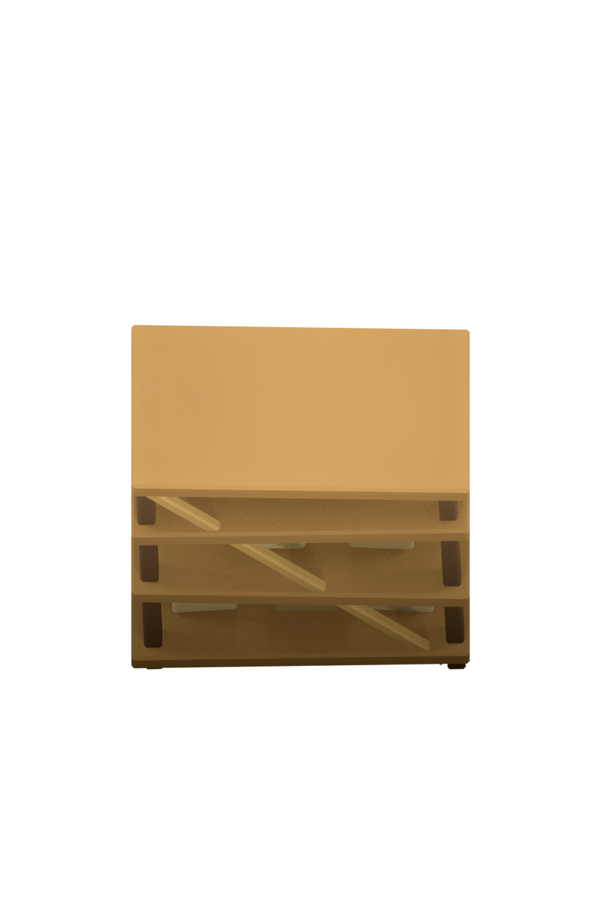
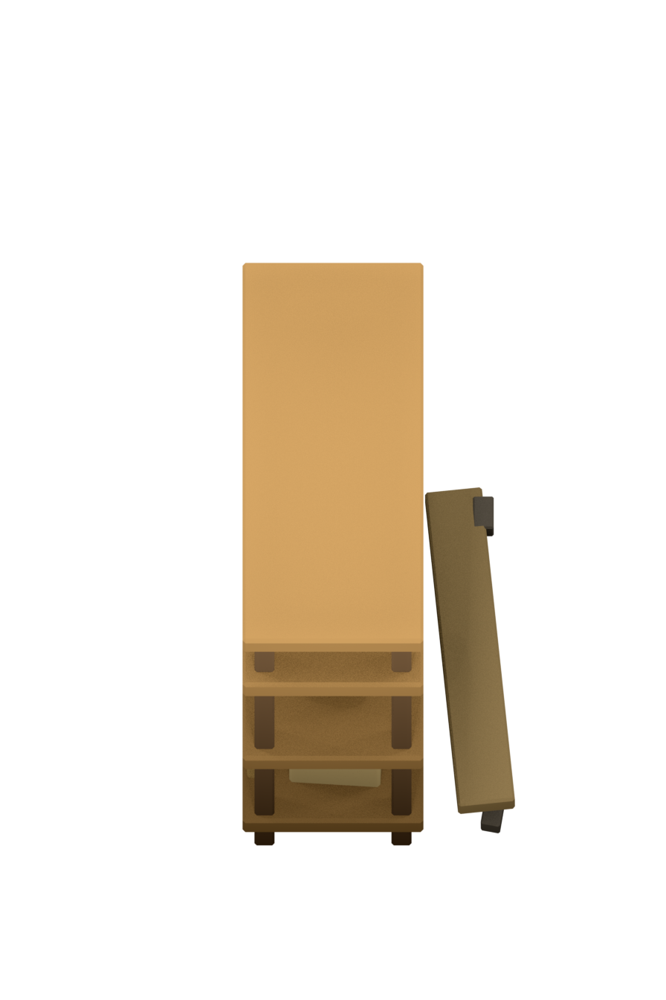
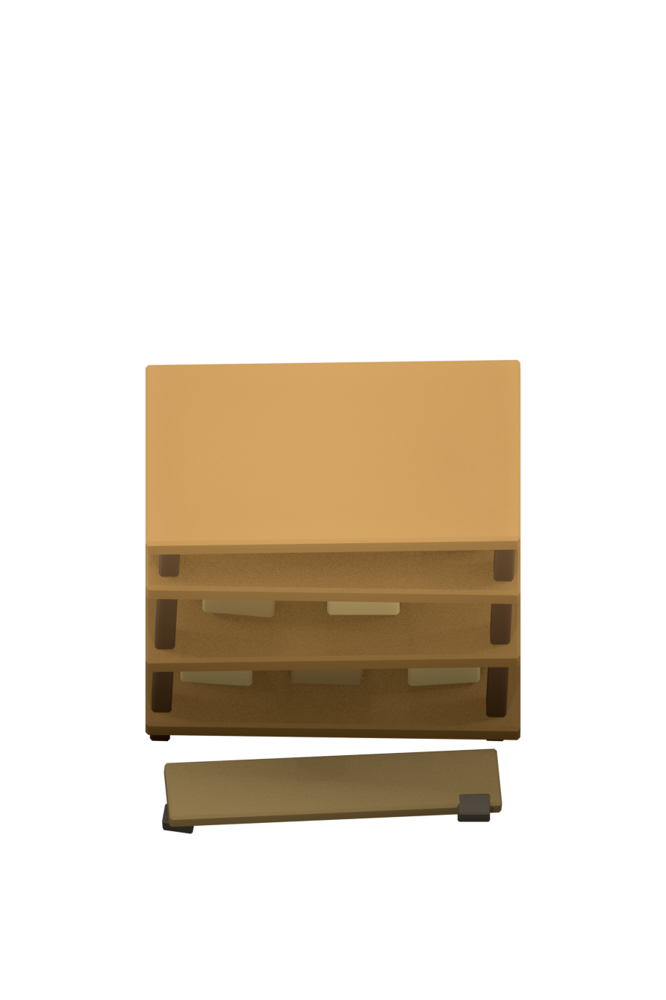
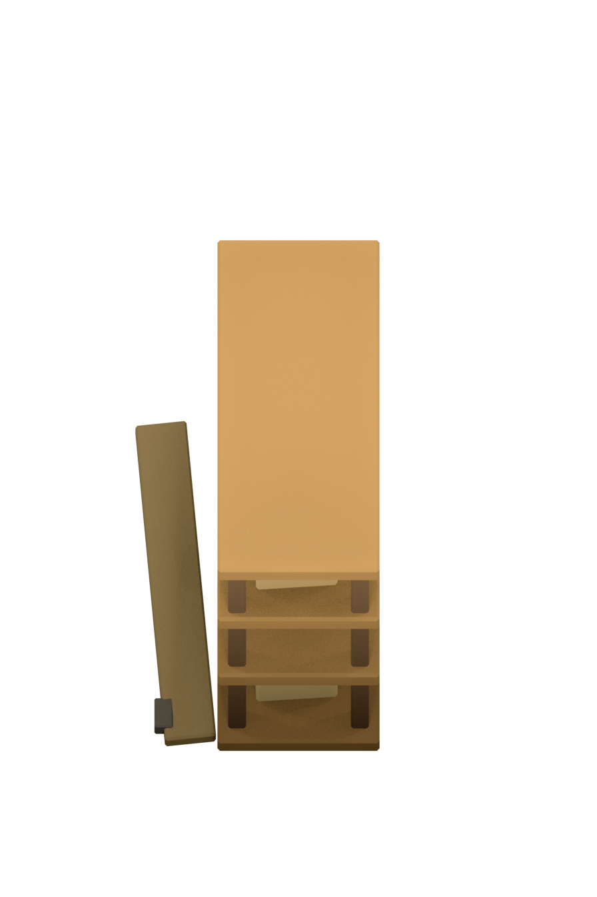

Source b1765262bfa897ad. Full registered frames scaled uniformly to phone168x252. 12fps. Highlighted loops; clearance stops on frame11; Restart replays clearance. No fade or object removal is added.



